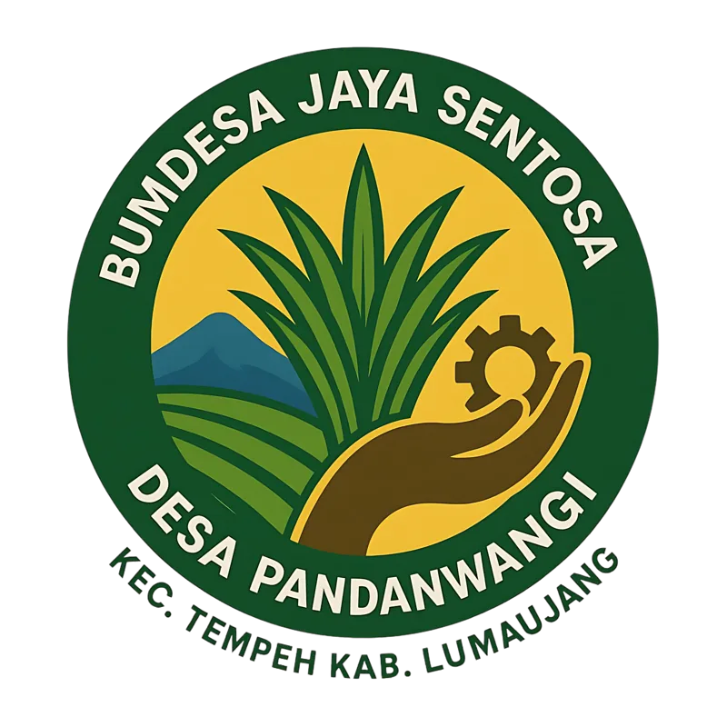
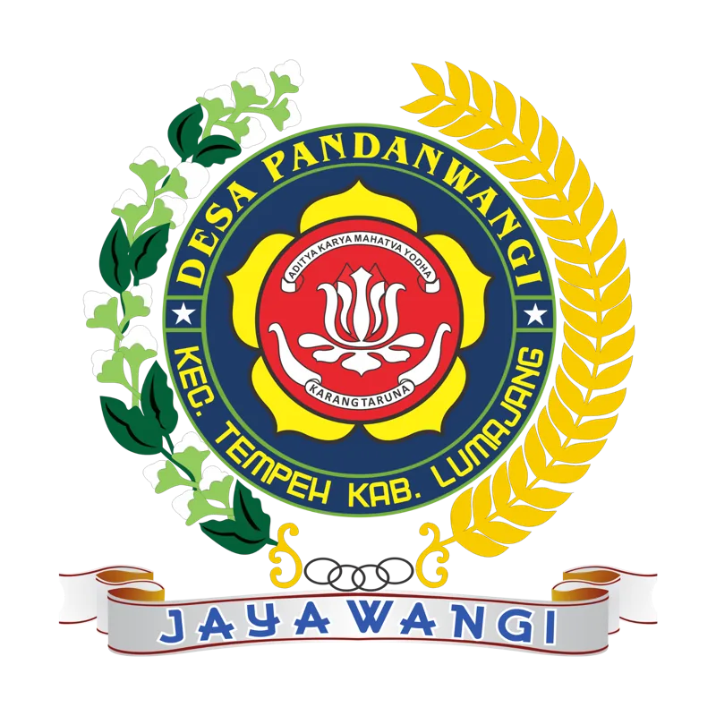
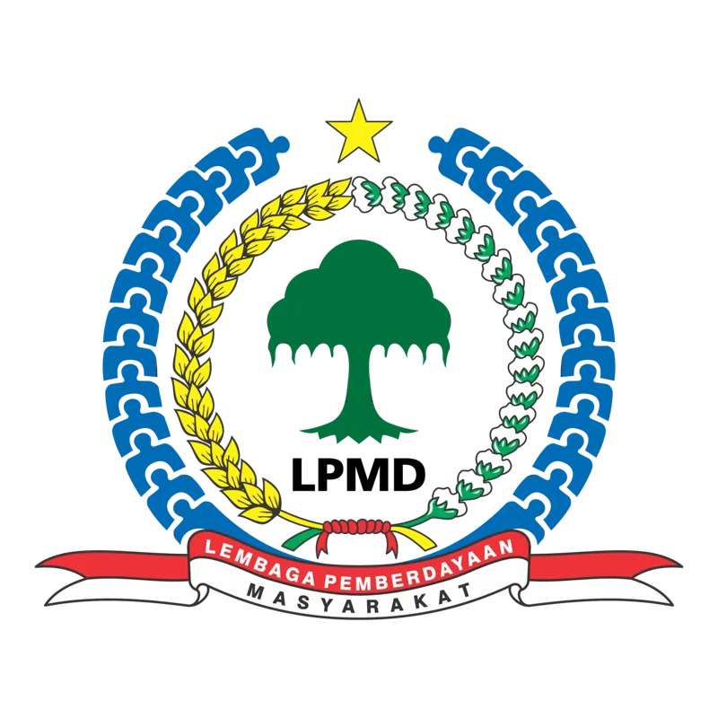
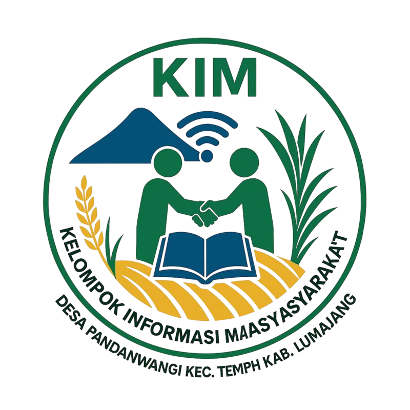
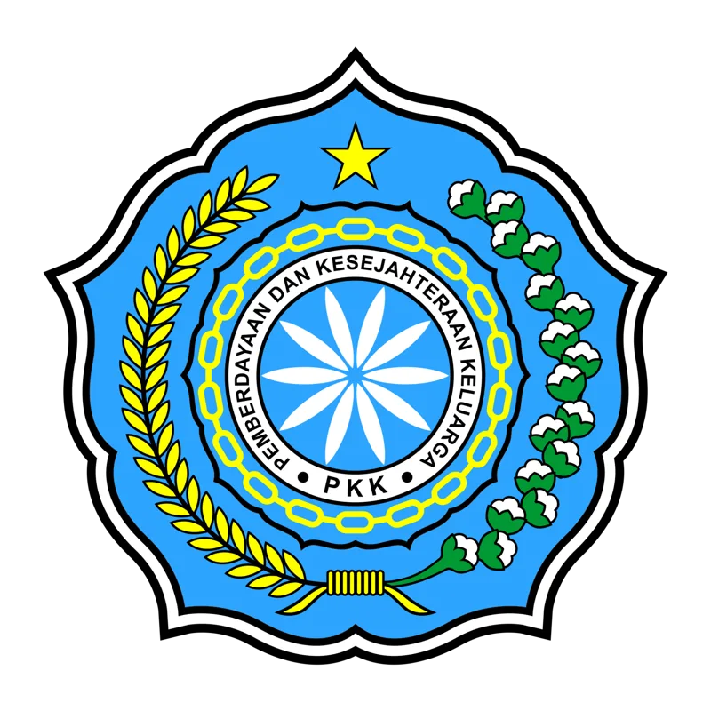

BUMDesa Jaya Sentosa
Badan usaha milik desa yang mengelola unit usaha berbasis potensi lokal: penyewaan peralatan, GOR, dan pengembangan produk UMKM, untuk menambah pendapatan asli desa dan membuka lapangan kerja.
Lembaga kemasyarakatan adalah mitra kerja pemerintah desa untuk tata kelola yang partisipatif dan transparan: ekonomi, kepemudaan, perencanaan, informasi, hingga pemberdayaan keluarga.
Pembangunan desa tidak bisa dikerjakan pemerintah desa sendirian. Para pengurus lembaga ini adalah warga yang menyisihkan waktu dan tenaganya untuk menggerakkan ekonomi, membina pemuda, menyebarkan informasi, dan menguatkan keluarga. Mereka adalah wajah gotong royong Pandanwangi.
arahkan kursor ke kartu untuk melihat kegiatannya →

Badan usaha milik desa yang mengelola unit usaha berbasis potensi lokal: penyewaan peralatan, GOR, dan pengembangan produk UMKM, untuk menambah pendapatan asli desa dan membuka lapangan kerja.

Organisasi kepemudaan yang aktif dalam kegiatan sosial, budaya, olahraga, dan pelatihan keterampilan. Wadah generasi muda untuk berkarya dan membangun desa.

Lembaga Pemberdayaan Masyarakat Desa membantu pemerintah desa menyusun perencanaan pembangunan, mendorong keterlibatan warga, dan menjembatani aspirasi dengan arah kebijakan desa.
Lembaga ekonomi kerakyatan untuk simpan pinjam, distribusi kebutuhan pokok, dan usaha kolektif lainnya dengan semangat kebersamaan dan kemandirian.

KIM menyebarluaskan informasi desa (kebijakan, program, dan potensi lokal), sekaligus menjadi sarana edukasi digital dan komunikasi dua arah antara pemerintah desa dan warga.

Pemberdayaan dan Kesejahteraan Keluarga: kesehatan, pendidikan anak, ekonomi rumah tangga, pelestarian lingkungan, dan peran perempuan dalam pembangunan desa.
Mengoordinasi kegiatan warga di tingkat lingkungan dan menjembatani komunikasi warga dengan pemerintah desa. Pandanwangi memiliki 0 RT.
Wadah koordinasi antar-RT dalam satu wilayah dusun. Pandanwangi memiliki 0 RW.
Daftar pengurus diambil langsung dari data petugas & lembaga di aplikasi desa, sehingga selalu mengikuti SK terbaru. Pilih lembaga untuk melihat susunannya.